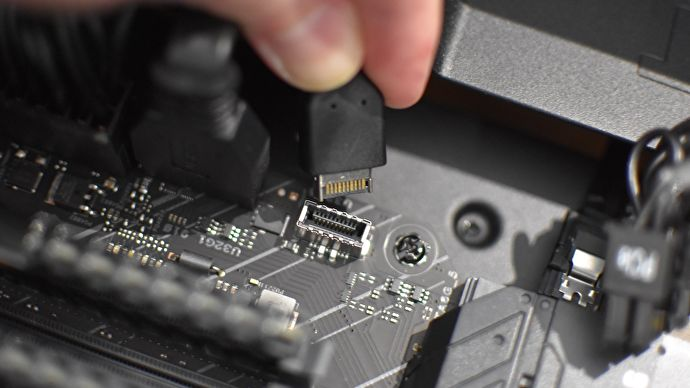
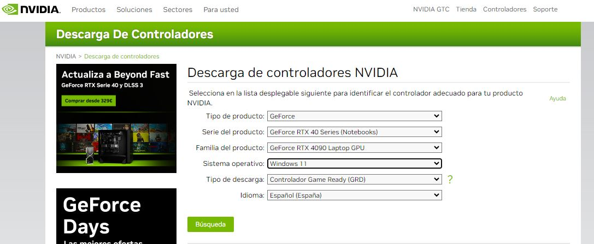
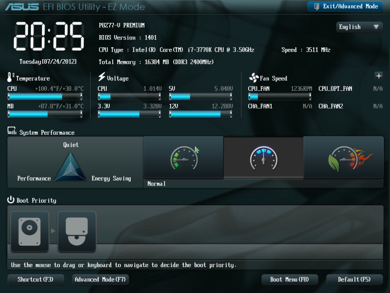
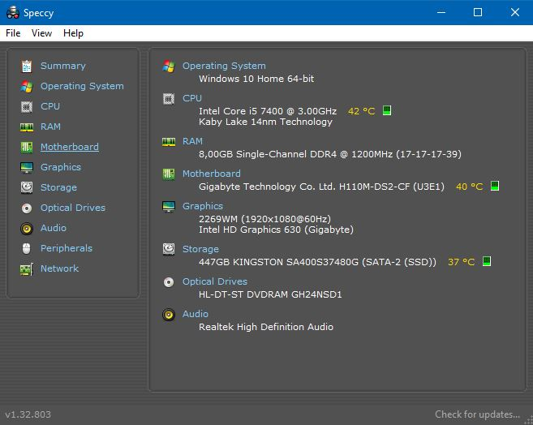

Caso 1. Ordenador montado por nosotros mismos.
Tras montar nuestro ordenador y antes de instalar nuestros juegos y aplicaciones favoritas y de empezar a utilizarlo con total libertad, hay algunas cosas que deberíamos hacer para terminar de verdad el trabajo y asegurarnos de que todo ha ido bien.
Es una cuestión más importante de lo que parece. Montar un ordenador no es un proceso complicado, de hecho puede ser incluso bastante rápido si tenemos experiencia, pero esto no quiere decir que no podamos cometer errores, y tampoco significa que el trabajo acabe al completar el montaje.
Una vez que tenemos el equipo terminado debemos realizar una serie de comprobaciones y una puesta a punto que se pueden resumir en pocos pasos que debemos seguir en orden (empezando por el punto número uno y continuando en orden hasta el último). Estos pasos son:
1. Revisar todo el cableado y las conexiones antes de cerrar la carcasa del ordenador.
Montar un ordenador puede implicar la instalación de muchos componentes, como varias unidades de almacenamiento (discos duros, lectores de tarjetas,...) y de muchos periféricos, por lo que la cantidad de cableado puede ser bastante grande, lo que aumenta las posibilidades de cometer errores y obliga a hacer una cuidadosa gestión del mismo.
Si no conectamos bien un determinado componente, puede que no funcione correctamente, que no podamos gestionarlo desde a través de la herramienta de software correspondiente, o directamente que el ordenador no arranque. Las consecuencias pueden ser muy variadas en función del conector que hayamos olvidado (o conectado mal).
Es mejor perder unos minutos revisando el cableado y las conexiones antes de cerrar la carcasa, que encenderlo y ver que algo ha ido mal. Debemos tener paciencia y repasar las conexiones de cada uno de los componentes. Algo tan simple como una memoria RAM que no ha sido ajustada debidamente puede impedir el arranque del PC, así que no deberíamos saltarnos este paso.
Si, a pesar de haber conectado todo correctamente, tenemos problemas en el arranque del ordenador, puede que hayamos utilizado hardware incompatible, que éste requiera una actualización determinada para funcionar con un componente en concreto o que tengamos otro tipo de problemas (alimentación insuficiente por una fuente poco potente, por ejemplo). Habría que revisar la configuración y analizarla pieza a pieza.

2-.Instalar y actualizar el sistema operativo, y descargar los últimos drivers.
Si todo está correcto y encendemos el ordenador sin problemas, lo siguiente sería realizar la instalación del sistema operativo que queramos utilizar. Este paso no debería ser difícil, ya que se trata de un proceso autoguiado mediante un asistente de instalación que nos indicará los pasos a seguir. El sistema operativo podemos instalarlo, por ejemplo, a través de un USB autoarrancable en la mayoría de los casos (veremos cómo hacerlo en la siguiente unidad).
Una vez terminada la instalación del sistema operativo y la configuración básica deberíamos descargar e instalar todos los drivers o controladores que vayamos a necesitar (pequeños programas que permiten al sistema operativo utilizar los diversos componentes del hardware del ordenador). Para realizar este paso sin problemas, es fundamental que conozcamos los diferentes componentes que hemos instalado, y que recurramos únicamente a las web oficiales de cada fabricante, nada de terceros, ya que podríamos encontrarnos con software no deseado en las descargas.

3.-Inspeccionar la BIOS y actualizar a la última versión estable.
Las siglas BIOS hacen referencia a las palabras Basic Input-Output System, que en español significa "Sistema Básico de Entrada-Salida". La BIOS es lo primero que se ejecuta al encender un ordenador. Se trata de un programa almacenado en un chip de la placa base que permite a la misma reconocer qué está conectado a ella: procesador, tarjeta gráfica, RAM, unidades de almacenamiento… y cualquier otra tarjeta de expansión adicional. Sin la BIOS tan solo tendríamos una placa base, no un ordenador.
Así, la BIOS es el pilar central sobre el que se apoya la placa base y buena parte del hardware conectado a la misma. De ella dependerá la estabilidad del sistema, la compatibilidad, el soporte y el rendimiento de ciertos componentes, y también las funciones avanzadas a las que tendremos acceso. Mantener la BIOS de nuestra placa base actualizada es básico para asegurarnos de que nuestro ordenador funcionará correctamente, de que estará dando su máximo rendimiento en todo momento y de que estará preparado para utilizar nuevo hardware sin que tengamos que preocuparnos por cuestiones de compatibilidad y de soporte.
Es recomendable, eso sí, que antes de lanzarnos a actualizar la BIOS de nuestro PC, comprobemos cuidadosamente las indicaciones de cada fabricante, ya que algunas BIOS deben actualizarse siguiendo un orden concreto, es decir, no podemos ir directamente a la última versión. También es aconsejable evitar las versiones que no sean estables, ya que suponen un riesgo (aunque sea pequeño). Debemos buscar siempre, como en el caso de los drivers, en la web oficial del fabricante de nuestra placa base.

4.-Instalar todo el software que sea importante, y útil, para ti y tu PC.
Una vez actualizada la BIOS de nuestro ordenador, estamos preparados para el siguiente paso, instalar todo el software que pueda sernos de utilidad. Es un paso muy amplio, ya que aquí podemos incluir desde una solución de seguridad antimalware hasta las herramientas accesorias que nos permitirán sacar mayor partido a nuestro equipo.
Por ejemplo, existen programas gratuitos muy útiles para monitorizar todo lo relacionado con el procesador y la memoria RAM, como por ejemplo para ver las temperaturas de trabajo en tiempo real, hacer overclock (alterar la frecuencia de reloj del microprocesador para mejorar su rendimiento, sobre todo para juegos) o para deshabilitar y habilitar núcleos.
Otro ejemplo sería el caso de que utilicemos periféricos y accesorios con sistemas de iluminación LED RGB personalizables (como por ejemplo un teclado retroiluminado, mandos, altavoces,...), para lo que tendremos que descargar el software adecuado para controlarlos y poder crear efectos de iluminación únicos. Lo mismo deberíamos hacer para cualquier otro componente que tenga un software propio que pueda aportar algún valor a nuestro ordenador, algo que, obviamente, depende de cada montaje.
5.-Hacer una prueba de rendimiento y monitorizar las temperaturas de trabajo.
Por último, si queremos asegurarnos de que finalmente todo ha ido bien, es recomendable hacer una prueba de rendimiento del ordenador y revisar las temperaturas de trabajo que alcanza cada componente.
Este punto también es bastante amplio, ya que habría muchas cosas que probar: procesador, memoria RAM, unidad de almacenamiento, tarjeta gráfica y también nuestra conexión a Internet. Por suerte podemos encontrar muchas herramientas gratuitas que nos permitirán probar el rendimiento de nuestros componentes de forma individualizada y ver las temperaturas de trabajo que alcanzan (algunas de estas aplicaciones son: CPU-Z, HWMonitor, CineBench, Speccy, etc.). A estas pruebas de rendimiento se les suele denominar por la palabra inglesa "benchmark".
Es importante que apliquemos un estrés considerable sobre cada componente (hacerlo trabajar con intensidad) para identificar cualquier posible fallo durante la etapa inicial del montaje, ya que esto nos ayudará a detectar errores y a resolverlos antes de que puedan producir daños, y también a decidir si tenemos que tramitar la garantía.

Adicionalmente, podríamos dar otro paso más, el de crear un disco de recuperación y una copia de seguridad o backup de todos nuestros datos. Un disco de recuperación es una unidad externa a tu ordenador (CD, DVD, disco duro externo, pendrive,...) en la que hay una copia de tu sistema operativo y de los drivers esenciales para poder instalarlos. Te permite reparar o restablecer tu ordenador en el caso de que surja algún error que no te permita seguir utilizándolo con normalidad. Las copias de seguridad o backups son una acción de mantenimiento imprescindible a realizar cada poco tiempo para salvaguardar nuestros datos. Un equipo informático puede fallar en cualquier momento y la pérdida de nuestros archivos profesionales o personales puede tener un gran coste, en algunas ocasiones sin recuperación posible.